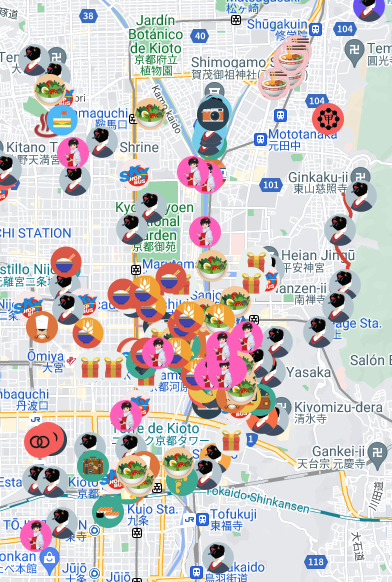

Altres punts d'interés
I si encara vols més, lloga una bicicleta i feix una ruta per Kyoto amb bici, com ho fan els vilatans. Això sí, compte amb no deixar la bicicleta mal aparcada o en llocs prohibits, si no vols perdre-la i pagar una multa. Consulta la web de Kyoto-Bicycle per a veure on llogar una bicicleta, quina aparcamientos hi ha disponibles, rutes, etc.
I finalment, també recomanem gaudir d'algun dels tres grans festivals de la ciutat: el Aoi Matsuri, el Gion Matsuri i el Jidai Matsuri. O acostar-te fins a Kurama per a gaudir del Festival del foc de Kurama o gaudir del festival Gaudixen no Okuribi, més conegut com “Daimonji”.
